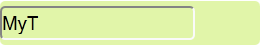
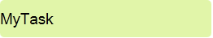
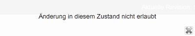
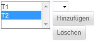

Task bearbeiten
Nach dem Sie einen Task zur Bearbeitung geöffnet haben erhalten Sie eine Detailansicht zum Task, in der Sie die folgenden grundlegenden Anpassungen vornehmen können.

Diese Maske kann weitere Eigenschaften behinhalten, wenn Sie bei der Erstellung des Tasks einen anderen Task-Tickettyp als den standardmäßig vorhandenen gewählt haben. Jeder Task hat aber immer mindestens diese grundlegenden Eigenschaften.
Um einen Task umzubenennen, klicken Sie einfach in dessen Bezeichnung und bearbeiten Sie diese entsprechend.
Beispiel
Vorher:

Nachher:

Bestätigen Sie Ihre Eingabe mit der Enter-Taste (auch Return-Taste genannt) oder durch Verlassen des Eingabefeldes.
Weitere Bedingungen an die Bezeichnung/Beschreibung sind identisch mit denen bei der Erstellung eines neuen Tasks (siehe hier).
Einige Änderungen an einem Task sind erst möglich, wenn er einen bestimmten Status erreicht hat. Beispielsweise kann erst ein Enddatum festgelegt werden, wenn sich der Task im Status "in Arbeit" befindet. Ist dies nicht der Fall, so wird die folgende Fehlermeldung (wie bei allen Status Verletzungen) angezeigt:

Um den Status zu wechseln, wählen Sie den entsprechenden Status aus, zu dem gewechselt werden soll

und klicken Sie anschließend auf  um in den entsprechenden Status zu wechseln.
um in den entsprechenden Status zu wechseln.
Ein Enddatum kann nur definiert werden, wenn der Task sich "in Arbeit" befindet.
Indem Sie auf das Eingabefeld für das Enddatum klicken blendet Ihnen die Anwendung einen Kalender zur Auswahl des gewünschten Releasedatums ein:

Es wird empfohlen auf die manuelle Eingabe eines Datums zu verzichten, da das Eingabeformat nicht den gängigen Datumsformaten entspricht.
Dem Task werden automatisch sämtliche dem Sprint zugeordnete Backlogeinträge zugeordnet. Gibt es weitere Backlogeinträge, so können diese optional dem Task zugeordnet werden. Wählen Sie dazu einen entsprechenden Eintrag aus:
 (TODO Bug528, dann neuen Screenshot machen)
Durch Klicken auf "Hinzufügen" weisen Sie ein Ticket dem Task zu und durch klicken auf "Löschen" können Sie ein selektiertes Ticket (hier "T2") wieder entfernen.
Weist dem Task die für diesen Task zuständige Person zu.
Hier kann dem Task ein Aufwand zugewiesen werden. Für den Aufwand können nur Angaben im Bereich der natürlichen Zahlen gemacht werden.
Created with the Personal Edition of HelpNDoc: Easily create Web Help sites